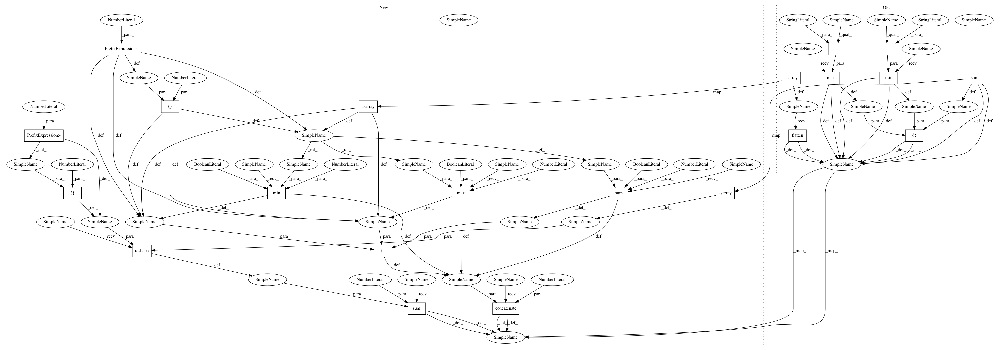

25508c13627f06510f3cab96d742360b0187640a,tests/windows_aggregator_grid_v2_test.py,GridSamplesAggregatorTest,test_init_2d_mo_bidimcsv,#GridSamplesAggregatorTest#,507
Before Change
sampler.set_num_threads(2)
while more_batch:
out = sess.run(sampler.pop_batch_op())
min_val = np.sum((np.asarray(out["image"]).flatten()))
stats_val = [np.min(out["image"]), np.max(out["image"]), np.sum(
out["image"])]
stats_val = np.expand_dims(stats_val, 0)
stats_val = np.concatenate([stats_val, stats_val], axis=0)
more_batch = aggregator.decode_batch(
{"window_image":out["image"],
"csv_sum":min_val,
"csv_stats_2d":stats_val},
After Change
sampler.set_num_threads(2)
while more_batch:
out = sess.run(sampler.pop_batch_op())
out_flatten = np.reshape(np.asarray(out["image"]), [10, -1])
min_val = np.sum(np.reshape(np.asarray(out["image"]),
[10,-1]),1)
stats_val = np.concatenate([np.min(out_flatten,1,
keepdims=True), np.max(
out_flatten, 1,keepdims=True), np.sum(
out_flatten,1,keepdims=True)],1)
stats_val = np.expand_dims(stats_val, 1)
stats_val = np.concatenate([stats_val, stats_val], axis=1)
more_batch = aggregator.decode_batch(
{"window_image":out["image"],
"csv_sum":min_val,
"csv_stats_2d":stats_val},
In pattern: SUPERPATTERN
Frequency: 3
Non-data size: 21
Instances
Project Name: NifTK/NiftyNet
Commit Name: 25508c13627f06510f3cab96d742360b0187640a
Time: 2019-06-29
Author: carole.sudre@kcl.ac.uk
File Name: tests/windows_aggregator_grid_v2_test.py
Class Name: GridSamplesAggregatorTest
Method Name: test_init_2d_mo_bidimcsv
Project Name: NifTK/NiftyNet
Commit Name: 25508c13627f06510f3cab96d742360b0187640a
Time: 2019-06-29
Author: carole.sudre@kcl.ac.uk
File Name: tests/windows_aggregator_grid_v2_test.py
Class Name: GridSamplesAggregatorTest
Method Name: test_init_2d_mo_3out
Project Name: NifTK/NiftyNet
Commit Name: 25508c13627f06510f3cab96d742360b0187640a
Time: 2019-06-29
Author: carole.sudre@kcl.ac.uk
File Name: tests/windows_aggregator_grid_v2_test.py
Class Name: GridSamplesAggregatorTest
Method Name: test_init_2d_mo_bidimcsv
Project Name: NifTK/NiftyNet
Commit Name: 25508c13627f06510f3cab96d742360b0187640a
Time: 2019-06-29
Author: carole.sudre@kcl.ac.uk
File Name: tests/windows_aggregator_grid_v2_test.py
Class Name: GridSamplesAggregatorTest
Method Name: test_init_3d_mo_bidimcsv